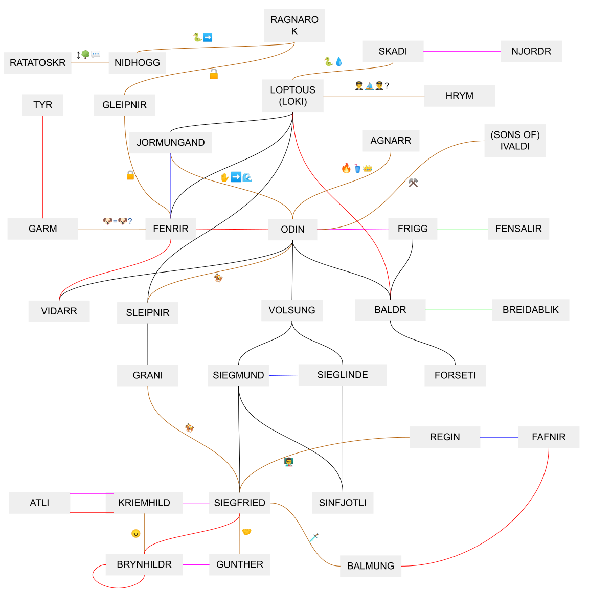

Solution Mythic Arms
Answer MONOTHEISTIC
Written by Dai Yang
There are 17 clue phrases in the puzzle that have been mangled by applying various word transformations, and disguised using all caps without spaces. Once we figure out the transformation for each one, we can separate the phrases into a main phrase and a (shorter) extra phrase. Each main phrase gives an answer, and when the corresponding transformation is applied to that answer, we get the name of a character from the Fire Emblem series. The clue phrases are presented alphabetically by the name of the Fire Emblem character, and the fire emojis are also there to indicate the Fire Emblem connection.
| Mangled clue | Unmangled clue | Transformation | Extra phrase | Main phrase answer | FE character |
|---|---|---|---|---|---|
| QEEFUNCTTEOOGLEVERRATIONALFEOCIALAEETWORKBENCECEOPULAROEELIEFSVENOERAZIL | DEFUNCT GOOGLE IRRATIONAL SOCIAL NETWORK ONCE POPULAR BELIEFS IN BRAZIL | Shift first letter by 13, insert E after | IRRATIONAL BELIEFS | ORKUT | BERKUT |
| GALAIANAORAGAELICAFORAINSANCEARESOLUEA | GALATIAN OR GAELIC FOR INSTANCE RESOLUTE | Remove T, insert A at end | RESOLUTE | CELTIC | CELICA |
| EIMINAEILIFEINIRUTAEFEIINOCIEIETARETLUDANUEILCYCROTOMEIDILS | ANIME FILM FEATURING ICONIC UNADULTERATED MOTORCYCLE SLIDE | Reverse, replace first letter with EI | UNADULTERATED | AKIRA | EIRIKA |
| LEGALESTLEIALEGSINWITHSIXNRIHETORWINGS | LEGAL CELESTIAL BEINGS WITH SIX INHERITOR WINGS | Delete first letter then swap the 4th and 5th letters with the 2nd and 3rd letters (if the word has at least 6 letters) | LEGAL INHERITOR | SERAPHIM | EPHRAIM |
| ESTLEIALLADYEGSINWITHSIXWINGSOTEUNRPART | CELESTIAL LADY BEINGS WITH SIX WINGS COUNTERPART | Delete first letter then swap the 4th and 5th letters with the 2nd and 3rd letters (if the word has at least 6 letters) | LADY COUNTERPART | SERAPHIM | EPHRAIM |
| YAESTABLISHMENTASPROVIDINIGFOOIDSTRATEGISYTANYDLODGINIGFOIRTRAVELERYS | A ESTABLISHMENTS PROVIDING FOOD STRATEGIST AND LODGING FOR TRAVELERS | Insert the vowel before the first vowel (wrapping around; Y is a vowel), before last letter | A STRATEGIST | INNS | INNES |
| GIVIUNNAIUEIUFPOSTUIUENOVELIIUTWIUOINSPIRIUDAIURMYSTEIUYHUIUTRELEVANIUETHEIUE | GIVEN NAME OF POSTURE NOVELIST WHO INSPIRED A OR MYSTERY HUNT RELEVANCE THEME | Replace 2nd to last letter with IU | POSTURE OR RELEVANCE | JULES | JULIUS |
| YWHEREUSHAHSVTRANSCENDINGQORIGINATETREALITYHFROM | WHERE SHAHS TRANSCENDING ORIGINATE REALITY FROM | Insert first letter shifted by 2 before first letter | TRANSCENDING REALITY | IRAN | KIRAN |
| RINOINGOBSOOVEROOFUNOOARYBOOL | RINGING OBSERVER OF FUNERARY BELL | Replace middle letter(s) with O | OBSERVER | KNELL | KNOLL |
| YNENVOYEIWIFETHTHATRRORBAJACOBDAMARRIEDRALATEREEDELEGATE | ENVOY WIFE THAT OR JACOB MARRIED LATER DELEGATE | Insert last letter and 2nd letter before first letter | ENVOY OR DELEGATE | RACHEL | L’ARACHEL |
| THEMATICBOWMAWITHFEMIIECOMMODEMEAORADPURPLEPHOEHAIRSTATE | THEMATIC BOWMAN WITH FEMININE COMMON DEMEANOR AND PURPLE PHONE HAIR STATE | Remove N | COMMON PHONE STATE | LEON | LEO |
| MAYSNBETSNHEMATICNSSWORDFIGHSNTERWHWEOSNSECULTURALMULTISNHERITASNGEWWEASEWIWENSPISNREDBYTSNHEMEWONGOWELSTRACK | MAYBE THEMATIC SWORDFIGHTER WHOSE CULTURAL MULTI HERITAGE WAS INSPIRED BY THE MONGOLS TRACK | For every cardinal direction (E/S/W/N) insert the adjacent cardinal directions 2 places before it (SN/WE/NS/EW) (if it’s not the first letter of the word) | MAYBE MULTI TRACK | LYN | LEWYN |
| OTOFTOALARGTOEOFRORPOSSIBLFROYUNCOUNTABLTOEWORSHIFROPNUMBEFRORSITTOE | OF A LARGE OR POSSIBLY UNCOUNTABLE WORSHIP NUMBER SITE | If last letter is in [A-M] insert TO before it; if last letter is in [N-Z] insert FRO before it | WORSHIP SITE | MANY | MANFROY |
| SLARGESTTSTSTYPEEPESETHNICCICSOFFOFSGROUPPUPSWORLDWIDEEDESPROJECTIONNON | LARGEST TYPE ETHNIC OF GROUP WORLDWIDE PROJECTION | Insert S before first letter, insert last letter, 2nd to last letter, last letter after last letter | TYPE OF PROJECTION | HAN | SHANNAN |
| DHHENCLOSESHAREARFOSHDUELISTOTSAMBITIONEHHCOMPET | ENCLOSED AREAS FOR DUELISTS TO AMBITIONS COMPETE | Move last letter before first letter, insert as many H’s after it as there are E’s | AMBITIONS | ARENAS | SHARENA |
| TDEVILISHTHADTTURBITFIGHTINGTGAMITBADTGUITWITHTREDTHAIR | DEVILISH HAD TURBO FIGHTING GAME BAD GUY WITH RED HAIR | Add T before first letter, change last letter to I if it is a vowel (including Y) | HAD | AKUMA | TAKUMI |
| MOSTMALEXOOSEORBRIEFXIXHTINGXIXOROUS | MOST MALE GOOSE OR BRIEF SIGHTING VIGOROUS | Change the first G and any preceding consonants to X | MOST VIGOROUS | GANDER | XANDER |
The presentation of the clues with fire emojis inside a rectangular card suggests a card game, and Fire Emblem 0 (Cipher) is a card game featuring Fire Emblem characters. All of the Fire Emblem characters found appear in said card game, sometimes on multiple cards. Each of the extra phrases clues a word that uniquely identifies a Cipher card.
| FE character | Extra phrase | Extra phrase answer | Name of Cipher card |
|---|---|---|---|
| BERKUT | IRRATIONAL BELIEFS | DELUSIONS | Delusions of Supremacy |
| CELICA | RESOLUTE | DETERMINED | Determined to Save the World |
| EIRIKA | UNADULTERATED | PURE | Storm of Pure Kindness |
| EPHRAIM | LEGAL INHERITOR | HEIR | Royal Heir to the Sacred Twin |
| EPHRAIM | LADY COUNTERPART | LORD | Sacred Twin Lord |
| INNES | A STRATEGIST | STRATEGICIAN | King and Strategician |
| JULIUS | POSTURE OR RELEVANCE | BEARING | Shadow-Bearing Imperial Prince |
| KIRAN | TRANSCENDING REALITY | OTHERWORLDLY | Otherworldly Great Hero |
| KNOLL | OBSERVER | WATCHER | Watcher of Darkness |
| L’ARACHEL | ENVOY OR DELEGATE | EMISSARY | Emissary of Righteousness and Order |
| LEO | COMMON PHONE STATE | CHARGING | Mage Prince Charging Through Deep Darkness |
| LEWYN | MAYBE MULTI TRACK | DRIFTING | Drifting Prince of Wind |
| MANFROY | WORSHIP SITE | CHURCH | Archbishop of the Loptr Church |
| SHANNAN | TYPE OF PROJECTION | ASTRAL | Astral Sword Sovereign |
| SHARENA | AMBITIONS | DREAMS | Dreams of Befriending All Heroes! |
| TAKUMI | HAD | POSSESSED | Possessed Demon Prince |
| XANDER | MOST VIGOROUS | STRONGEST | Nohr’s Strongest Knight |
Below the clue phrases there is a large relationship diagram. The diagram contains 35 entities, consisting of 17 entities with question marks, and 18 entities with a letter and number. This suggests that we should fill out the blanks with question marks using the 17 Cipher cards, but the fact that EPHRAIM appears twice implies that it is not the characters themselves who should go into the blanks.
The title Mythic Arms suggests that we should consider the weapons associated with these characters. We notice that every Cipher card contains a reference to Norse mythology via one of the skill names on the card, which are also the names of legendary weapons associated with these characters. Note that LOPTOUS refers to LOPTR, which is a pseudonym for LOKI, and IVALDI refers to the Sons of Ivaldi.
| Character | Title | Weapon |
|---|---|---|
| BERKUT | Delusions of Supremacy | KRIEMHILD |
| CELICA | Determined to Save the World | RAGNAROK |
| EIRIKA | Storm of Pure Kindness | SIEGLINDE |
| EPHRAIM | Royal Heir to the Sacred Twin | SIEGMUND |
| EPHRAIM | Sacred Twin Lord | GARM |
| INNES | King and Strategician | NIDHOGG |
| JULIUS | Shadow-Bearing Imperial Prince | LOPTOUS |
| KIRAN | Otherworldly Great Hero | BREIDABLIK |
| KNOLL | Watcher of Darkness | GLEIPNIR |
| L’ARACHEL | Emissary of Righteousness and Order | IVALDI |
| LEO | Mage Prince Charging Through Deep Darkness | BRYNHILDR |
| LEWYN | Drifting Prince of Wind | FORSETI |
| MANFROY | Archbishop of the Loptr Church | JORMUNGAND |
| SHANNAN | Astral Sword Sovereign | BALMUNG |
| SHARENA | Dreams of Befriending All Heroes! | FENSALIR |
| TAKUMI | Possessed Demon Prince | SKADI |
| XANDER | Nohr’s Strongest Knight | SIEGFRIED |
Using these entities from Norse mythology, we can fill out the relationship diagram and identify the missing entities.

Legend:
- Black lines denote descendancy
- Red lines denote killing, possibly mutual
- Blue lines denote siblingship
- Green lines denote place of dwelling
- Pink lines denote marriage
- Brown lines denote miscellaneous relationships which are further clarified using emojis, for instance the 🏇 emoji appears twice and signifies that ODIN rode SLEIPNIR while SIEGFRIED rode GRANI, who is a descendent of SLEIPNIR.
Once we have all the entities, we can order them based on the letter and index into their name using the adjacent number.
| Figure in Norse mythology | Letter | Index | Extracted letter |
|---|---|---|---|
| GUNTHER | A | 5 | H |
| GRANI | B | 3 | A |
| VIDARR | C | 1 | V |
| SINFJOTLI | D | 2 | I |
| FENRIR | E | 3 | N |
| FRIGG | F | 4 | G |
| RATATOSKR | G | 6 | O |
| NJORDR | H | 1 | N |
| BALDR | I | 3 | L |
| TYR | J | 2 | Y |
| VOLSUNG | K | 2 | O |
| AGNARR | L | 3 | N |
| REGIN | M | 2 | E |
| ODIN | N | 2 | D |
| SLEIPNIR | O | 3 | E |
| FAFNIR | P | 5 | I |
| ATLI | Q | 2 | T |
| HRYM | R | 3 | Y |
Note that some entity names may have multiple anglicized forms. The answers above utilize the main form used on Wikipedia as of the time of writing. The extracted letter ends up being identical regardless of which variant is used, e.g. ATLI / ATTILA / ETZEL all extract to the letter T. An exception is GUNTHER / GUNNAR, where GUNTHER specifically is required.
Doing so gives us the phrase HAVING ONLY ONE DEITY, which yields the answer MONOTHEISTIC.